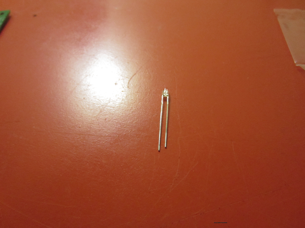
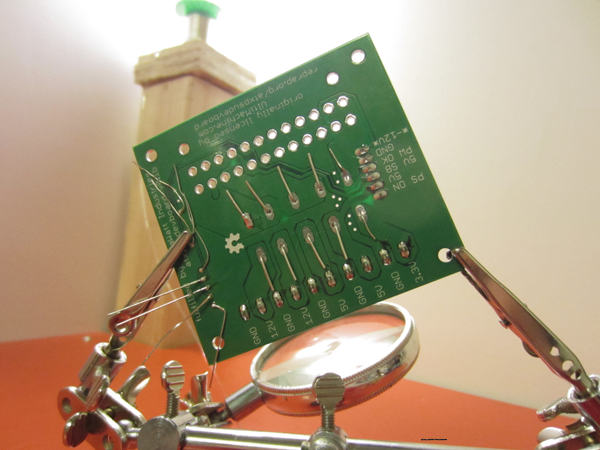
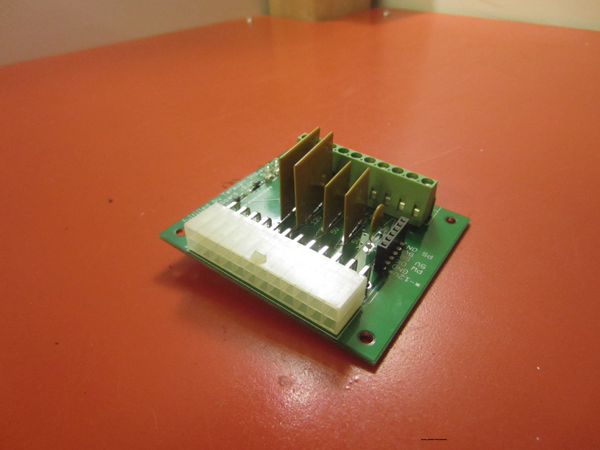
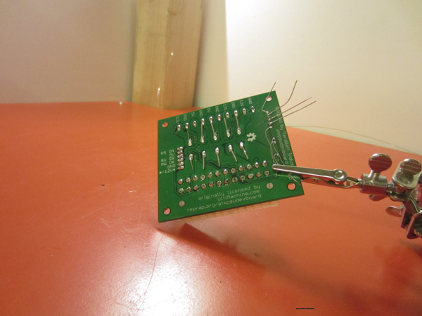

Terms and Conditions
This guide is intended for reference only.
Do-it-yourself electronics can be a fire hazard, a pinch hazard, a shock hazard, and a burn hazard. Terawatt Industries is not responsible for accidents caused by mis-wiring or mis-use of this product.
By proceeding to refer to this guide you agree to indemnify Terawatt Industries and its licensors, legally and wholly, for any failure of this product; or any damage caused by improper assembly or use of this product, not limited to you, your family, friends, estate, possessions, or their possessions. You agree that you are building or repairing your extruder and it is your reponsibility to assemble the part, inspect it regularly and often, and prevent it from failing or causing an accident, fire, or injury. If you do not agree to these terms and conditions, then do not proceed to use this manual as a reference.
Introduction
This is a short guide that provides a reference for assembly of the ATX PSU Adapter Board also known as the ATX PSU Developer Board.
The ATX PSU Adapter Board provides a means to connect an ATX PC power supply (PSU) to regulated 12v, 5v, and 3.3v outputs accessible via screw terminal connections. It also exposes all ATX pins available on the ATX connector. The Terawatt fulfillment of this product has some revisions with respect to the original design from Ultimachine.
- rev. 0.1b - Trace isolation increased from 8mil to 10mil
- rev. 0.1c - Accidental jumper-placement in the original design (0.1a) can result in a short: PS-ON and GND are on the same header amongst other connections like -12v. Added second 6-pos 0.1" header for additional GND connections. Replaced GND connection on original 0.1" header with a second (parallel) fuse-protected 3.3v output.
Bill of Materials
All components listed below are ROHS compliant.
- ATX PSU Developer Board PCB (ROHS Compliant, 1oz. copper trace weight, FR4 PCB)
- 2pcs. MFR1100 PTC fuse
- 2pcs. MFR500 PTC fuse
- 1pcs. MFR075 PTC fuse
- ATX PCB Connector, right-angle
- Terminal Block, 10-pos., 5.08mm pitch
- Female (or male) header, 6-pos, 2.54mm (0.1") pitch, gold-plated connectors
- 3MM LED Blue, Kingbright WP710A10QBC/D or equivalent
- 3MM LED Red, Kingbright WP710A10SRC/E or equivalent
- 1/8W axial resistor, 1K ohm
- 1/8W axial resistor, 330 ohm
Schematics
The Gerber CAD files for the PCB can be downloaded from https://bitbucket.org/terawattindustries/atx-psu-adapter-board/src/.
Schematic for PCB revision 0.1b
Schematic for PCB revision 0.1c (mislabeled PCB says '0.1b' on some PCBs, identified by black PCB)
Tools Needed
- ROHS compliant Soldering Iron and soldering station
- Lead-free solder
- wire-cleaning snips
Assembly
ATX PSU Power Adapter
Assembly of this component takes about 30 minutes for a beginner.
Step 1: Assembly and Soldering
We recommend cleaning and organizing your workstation first. This is essential for a successful assembly. Have all parts from the BOM readily available before starting is best.
- Note that the resistors are not labeled - you are expected to use the resistor color code chart. Hackers will realize the resistor color code chart resembles ROYGBIV with some twists, and thus have a key for memorization.
- Locate the 1/8W resistors and solder them into the marked locations on the PCB. The Terawatt ATX-PSU adapter board kits will always have a 1K resistor and a second, lower value resistor which is usually 500ohm or 330ohm, depending on the LED.
- Solder the resistors to the PCB. Polarity doesn't matter. In fact, the only time you need to pay attention to polarity during this assembly is for the LEDs.
- Note each LED has a shorter lead and longer lead. The longer lead is the anode lead. The LED must be oriented on the PCB properly or the LED won't work, although the board will be fine.
- Locate the red LED. Only the blue LED is labeled (or marked with a blue marker on its package). The other LED is red.
- The holes for both LEDs are adjacent, and next to the resistors you just soldered.
- Insert the LED into the PCB holes furthest away from the resistors. When looking at the PCB, the longer (anode) lead should be on the side closest to the resistors.
- Locate the blue LED.
- Insert the blue LED into the remaining LED holes. The longer lead should be on the side closest the the resistors, just like the red LED.
- Make sure both resistors are flush with the PCB. Once they're flush, solder them to the board.
- Insert a 6-pos female gold-plated header into the holes and solder one pin (photo shows the view from the bottom).
- Make sure the female header is flush with the top of the PCB. When it's flush, solder the remaining (5) pins.
- Insert the 10-pos screw terminal into the marked holes. You'll want to make sure the front of the terminal block faces the edge of the PCB.
- solder one (1) pin on each side - for a total of two (2) pins.
- Make sure the 10-pos. screw terminal is flush with the top of the PCB. When it's flush, solder the remaining (8) pins.

- Insert the fuses into the marked holes. Bend the leads on the bottom of the board to hold the fuse onto the PCB without solder during placement. Refer to the picture and schematic for proper order. Polarity does not matter.
- Make sure the fuses are flush with the PCB. When they're flush, solder the fuses onto the PCB.
- Snap the ATX connector into the PCB. The ATX connector has pins on both ends that will lock the connector onto the board during placement.
- Solder the ATX connector to the PCB. There is no need to worry about the connector being flush before soldering because its snap connectors ensure this.
Step 2: Clean-Up
- Use a pair of sharp wire-snips to clean the excess connectors from the PCB.
- Clean the soldering flux and residue from the PCB with 98% isopropyl alcohol or other specialized PCB cleaning solution.
Testing
If you smell fumes, see unusual behavior such as sparks, or are unsure how to proceed you should unplug the power supply immediately and contact Terawatt Industries for technical assistance.
- Locate a known-working ATX PSU - we recommend one with short-circuit protection.
- Make sure the PSU is not plugged into a wall outlet.
- Connect the PSU to the ATX adapter board (PSU should be unplugged).
- Check that no LEDs are lit on the adapter board while PS-ON and GND are disconnected. If the PSU has been (very) recently plugged into a wall outlet (powered), you may have to wait up to 90 seconds for its energy to discharge completely. All LEDs should eventually turn off when the PSU is unplugged.
- Plug the PSU into a wall outlet.
- Use a 0.1" male/male jumper to connect PS-ON to GND on the adapter board.
- Red and blue LEDs should light up immediately when the jumper is connected.
- The power outputs can be tested with an appropriate meter.
Enjoy!
The ATX Adapter Board is an awesome tool for hackers and reprappers. It's affordable, simple and robust, and high-quality PC power supplies are easy to find in surplus. 12v, 5v, and 3.3v work with many types of electronics equipment and projects and the ease-of-assembly and usage make this board a winner.
Troubleshooting
If you smell fumes, see unusual behavior such as sparks, or are unsure how to proceed you should unplug the power supply immediately and contact Terawatt Industries for technical assistance.
- LEDs wont light up:
- Is the power supply plugged in?
- Is PS-ON connected to GND?
- Are there any leads on the bottom of the adapter board that could cause a short?
- Any other issues not listed above:
- Contact Terawatt Industries for Technical assistance.